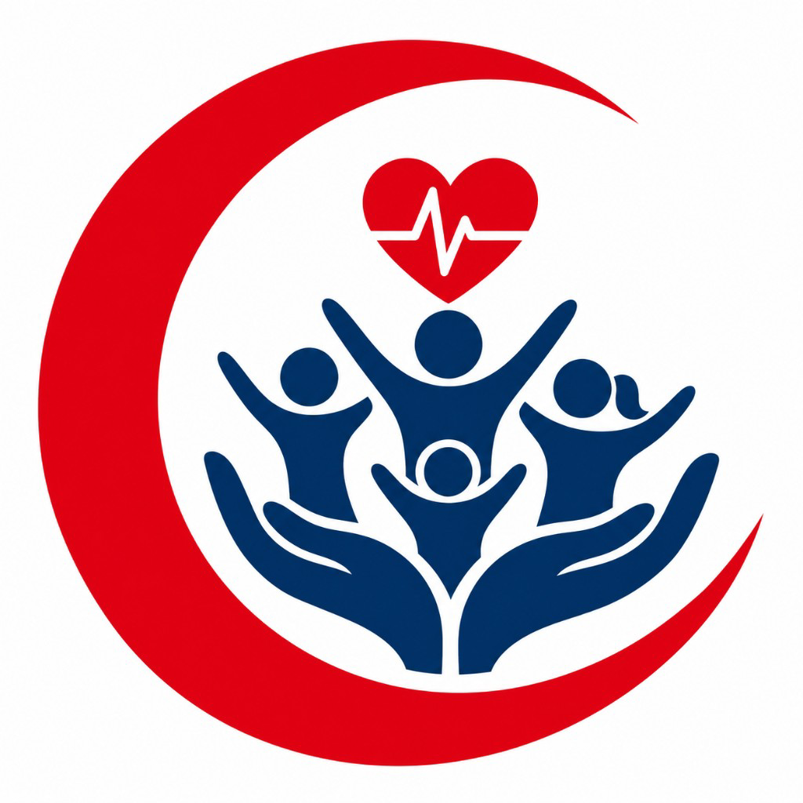

Community health fair platform — patients, volunteers, SOAP clinical notes, and ICD→lab AI — one Flutter codebase for every screen.
Health For All helps clinics and community fairs register patients and volunteers, run assessments, document SOAP notes with ICD-10, and get AI lab/imaging suggestions — with hybrid local + GoDaddy API sync.
Live patient & volunteer lists, KPIs, printable AI scores.
Subjective → Objective → Assessment → Plan with ICD chips.
Live GoDaddy recommendations plus offline guideline map.
Vitals, mental health, carotid, and AI risk scoring.
Order labs & radiology linked to patients.
Works offline; syncs to api.mywaitime.com when online.
Android · iOS · Web · macOS · Windows · Linux